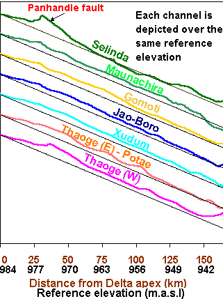

River channel elevation profile - land surface

The graph shows land surface
elevations along the major channels. The channels are here represented
as straight lines as shown in the map. The zero distance point in the figure
is set to the apex (topmost point) of the Delta. This point is were the
Okavango channel divides into several smaller channels. This "bifurcation"
point was identifed from the Delta
geometry. As seen in the figure over a distance of 150 km land surface
levels are only falling 42 metres (1/3 of a permille). All channels show
an increase in elevations upon entering the Delta. The Thaoge channels
were carrying most of the water flow in the 19th century. But because of
accumulated sand the channels became higher than the surroundings. From
the figure it is evident that Thaoge has a higher elevation than other
channels. The water that used to flow in the Thaoge instead flowed to the
Nqoga and more recently to the Jao-Boro. Today the Nqoga channel is rising
and more and more water flow into the Jao-Boro. Eventually also the Jao-Boro
will fill up. Selinda (the most easterly channel) have the largest "bump"
to pass over when entering the Delta - the upfault on the East side of
the Panhandle. After the bump, however, Selinda is the channel with
the steepest gradient. We believe that the gradient of the Selinda is increasing
due to earth movements (tectonics). This will eventually seal the faith
of the Delta. The accumulated bed of the Jao-Boro will again force the
water into a new channel. If water then flows to Selinda it will not stay
in the Delta but flow to the mighty Zambezi via Selinda and the Linyanti
swamp.
Click
for next page.